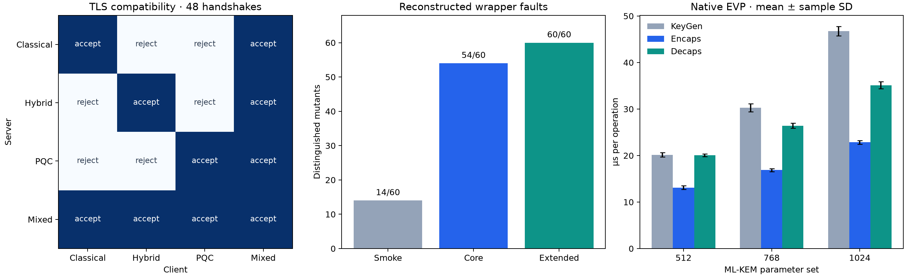

All values below are regenerated from the included observations.

Independent implementation from the manuscript; original source and raw data were unavailable.
OpenSSL 3.5.7 9 Jun 2026 (Library: OpenSSL 3.5.7 9 Jun 2026)
CPU: 13th Gen Intel(R) Core(TM) i5-13400F; Python 3.14.6
KEM/TLS/negative-path runtime: 5.717 s
| Algorithm | K1 | K2 | K3 | K4 | K5 | K6 |
|---|---|---|---|---|---|---|
| ML-KEM-512 | 40/40 | 40/40 | 40/40 | 40/40 | 40/40 | 40/40 |
| ML-KEM-768 | 40/40 | 40/40 | 40/40 | 40/40 | 40/40 | 40/40 |
| ML-KEM-1024 | 40/40 | 40/40 | 40/40 | 40/40 | 40/40 | 40/40 |
| Server / Client | Classical | Hybrid | PQC | Mixed |
|---|---|---|---|---|
| Classical | X25519 (3 trials) | reject (3 trials) | reject (3 trials) | X25519 (3 trials) |
| Hybrid | reject (3 trials) | X25519MLKEM768 (3 trials) | reject (3 trials) | X25519MLKEM768 (3 trials) |
| PQC | reject (3 trials) | reject (3 trials) | MLKEM768 (3 trials) | MLKEM768 (3 trials) |
| Mixed | X25519 (3 trials) | X25519MLKEM768 (3 trials) | MLKEM768 (3 trials) | X25519MLKEM768 (3 trials) |
| Scenario | Outcome | Client time (ms) |
|---|---|---|
| version-mismatch | PASS | 6.893 |
| no-common-group | PASS | 7.438 |
| abrupt-close | PASS | 8.587 |
| unknown-group | PASS | 3.604 |
These are new executable wrapper mutants, not the lost original sixty variants.
| Family | Smoke | Paper-defined core | Core + key-replacement check |
|---|---|---|---|
| KEM-WRONG-KEY | 6/6 | 6/6 | 6/6 |
| TLS-HYBRID-TYPO | 6/6 | 6/6 | 6/6 |
| CT-ALIAS | 0/6 | 6/6 | 6/6 |
| WRONG-KEY-ALIAS | 0/6 | 6/6 | 6/6 |
| TRUNC-PAD | 2/6 | 6/6 | 6/6 |
| SERIALIZE-BYPASS | 0/6 | 0/6 | 6/6 |
| SILENT-FALLBACK | 0/6 | 6/6 | 6/6 |
| DROP-PQ | 0/6 | 6/6 | 6/6 |
| VERSION-FORCE | 0/6 | 6/6 | 6/6 |
| UNKNOWN-SUBSTITUTE | 0/6 | 6/6 | 6/6 |
| Total | 14/60 | 54/60 | 60/60 |
Smoke vs core: discordant pairs (40, 0); two-sided exact McNemar p = 1.8189894e-12.
Smoke vs extended: discordant pairs (46, 0); two-sided exact McNemar p = 2.8421709e-14.
K4 compares the same key before/after reload. A cached original key can satisfy it. K4-REPLACE substitutes an independent stored key and tests separation; this is an explicitly added relation.
Unmodified controls: 60/60 pass. Paired fault campaign runtime: 19.973 s.
Mean ± sample standard deviation; 8 repetitions × 2000 operations.
| Algorithm | KeyGen (µs) | Encaps (µs) | Decaps (µs) | CT bytes |
|---|---|---|---|---|
| ML-KEM-512 | 20.17 ± 0.45 | 13.11 ± 0.39 | 20.10 ± 0.29 | 768 |
| ML-KEM-768 | 30.27 ± 0.87 | 16.87 ± 0.34 | 26.40 ± 0.54 | 1088 |
| ML-KEM-1024 | 46.77 ± 1.01 | 22.85 ± 0.40 | 35.11 ± 0.76 | 1568 |
Native runtime: 3.710 s. Core + native: 9.428 s (sequential phases; compiler time and fault campaign excluded).
Timing is host-, version-, and harness-dependent. The original paper's timing protocol is not fully specified.